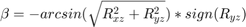
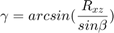
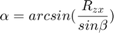
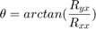
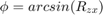
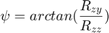
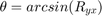
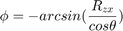
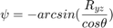

sequence
Takes a rotation matrix, and calculates the corresponding angles for sequential rotations.
Contents
Syntax
angles = sequence(rot_mat, to)
Input Arguments
- rot_mat -- Input rotation matrix [3x3], or matrices [Nx9]
- to -- Output format. Has to be one of the following: Euler / Fick / aero / Helmholtz
Euler <-> Rz * Rx * Rz Fick <-> Rz * Ry * Rx aero <-> same as "Fick" Helmholtz <-> Ry * Rz * Rx
Output Arguments
- angles --- corresponding 3 rotation angles [alpha, beta, gamma]
alpha : first rotation(right-most matrix) beta : second rotation gamma : third rotation (left-most matrix)
Notes
The following formulas are used:
Euler



aero / Fick



Note that it is assumed that psi < pi !
Helmholtz



Note that it is assumed that psi < pi